UI/UX WORK
Designing Innovation
FriendsLearn Inc - Fooya!
Organization
University of Michigan School of Information & FriendsLearn Inc.
Project Team
Team of 4 UX BSI Students
Team Role
UI/UX Researcher and Designer
Project Duration
September 2018 - April 2019
Executive Summary
Opportunity Statement
Identify target user group needs and habits to increase engagement, comprehension, and usability of “Fooya!” With this information, FriendsLearn could more effectively instill healthy habits in kids and thereby help address the diabetes epidemic.
Project Goals
- Identify the factors that drive user engagement.
- Explore game mechanics that contribute to or detract from usability.
- Align navigation and control with user mental models to remedy existing control errors.
Impact and Next Steps
The team created design assets in Adobe Illustrator of the re-designed screens, so that the assets can be easily mapped into Unity. Median action search time was reduced by 15%, and overall comprehension of the game increased by almost 100%.
Key Findings
Control
User freedom and control are main factors in maintaining engagement over time. Perceived control can be increased by reducing recognition over recall and providing navigation options in multiple menus. Control is also influenced by a player’s sense of long-term progress. This can be further improved with deeper integration of character upgrades, in addition to consistent updates of how immediate gains affect long term progress.
Consistency
In order for users to fully immerse themselves in the game, it is imperative that styling is consistent. This allows for easier navigation and lower cognitive processing times. There are multiple areas in Fooya! with varying styles that need to be addressed. All team redesigns are consistently styled within themselves. Furthermore, a style guide has been provided to detail these changes. It is recommended that this style guide be updated and modified as needed for future development.
Research
Methods
The following qualitative and quantitative methods were used to understand the target user population’s needs, paint points, habits, and expectations:
- Heuristic Analysis
- Competitive Analysis
- User Interviews
- Persona & Scenarios
Heuristic Analysis
Before completing user interviews, applying Nielsen’s Ten Usability Heuristics and Korhonen’s Mobile Game Heuristics revealed issues with user freedom and control, consistency and standards, and recognition over recall.
User Interviews
Six user interviews were completed at the Ann Arbor District Library, where kids were asked to play Fooya! and complete tasks in the game for a couple of minutes and then answer follow-up questions about the game. The interview data was used to identify patterns through a set of qualitative codes, including:
- Confusion
- Enjoyment
- Pain Points
- Questions
Persona
Patterns identified in the interviews were used to create a holistic persona; a person with a story who would use this game. Creating this face helped the team truly understand and empathize with the user.

UX Requirements
- Create robust mobility and navigation to increase support for tech-savvy players to engage with Fooya! progressively over time.
- Decrease system inconsistencies and lay a framework for future Fooya! UX style and navigation system to ensure sustainability of project work and shorten design production time for FriendsLearn in the future.
- Improve gameplay mechanics and item integration to increase engagement with experienced gamers. Reduce confusion and learning curve for new players
Design Overview
Target Areas
The following areas were identified as best candidates for redesign due to the UX Requirements determined by the research phase:
- System-wide style
- Map
- Gameplay
- Gameplay menus (pause and stage complete)
- Power-Ups, Acheivments, and Leaderboard
Style Guide
All recommended changes have been documented at a system level in a style guide for Fooya!. It is the team's hope that this document will be updated over time. Proper maintenance and adherence to a style guide will reduce design and development time, in addition to increasing effective branding.
Illustrator Assets
Redesigns have been provided in the form of Adobe Illustrator (.ai) files. Meeting with the FreindsLern Inc. Lead Designer determined this would be the most effective way to integrate into current workflow
Redesigns
Map
Before
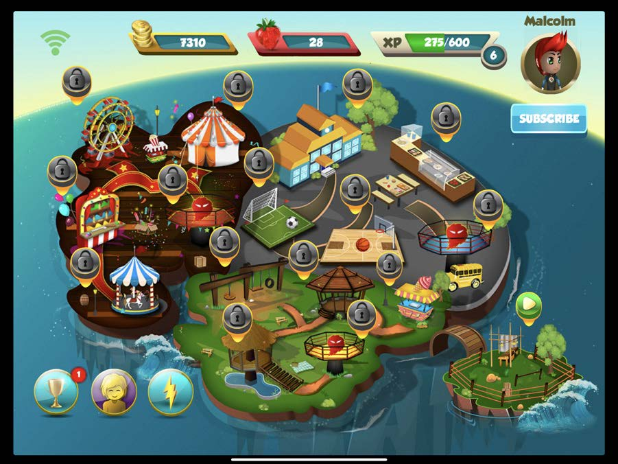After
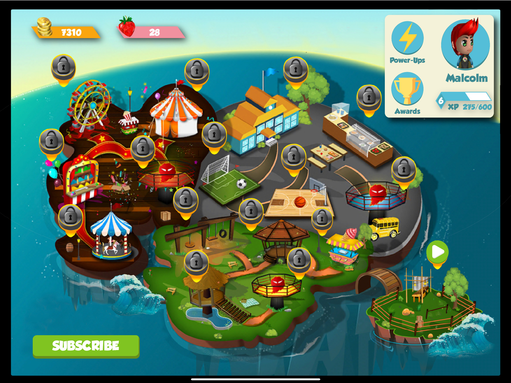- All progression screens are grouped in a character module.
- Prominence of call to action button increased.
Gameplay
Before
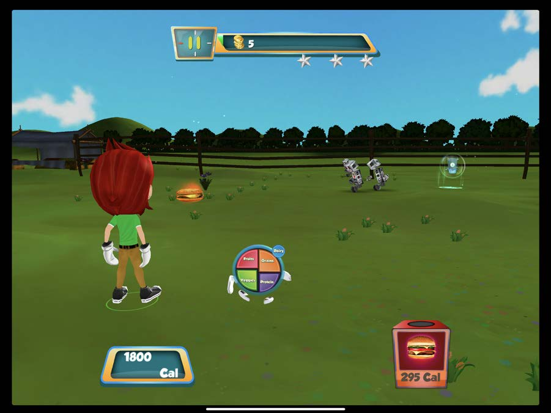After
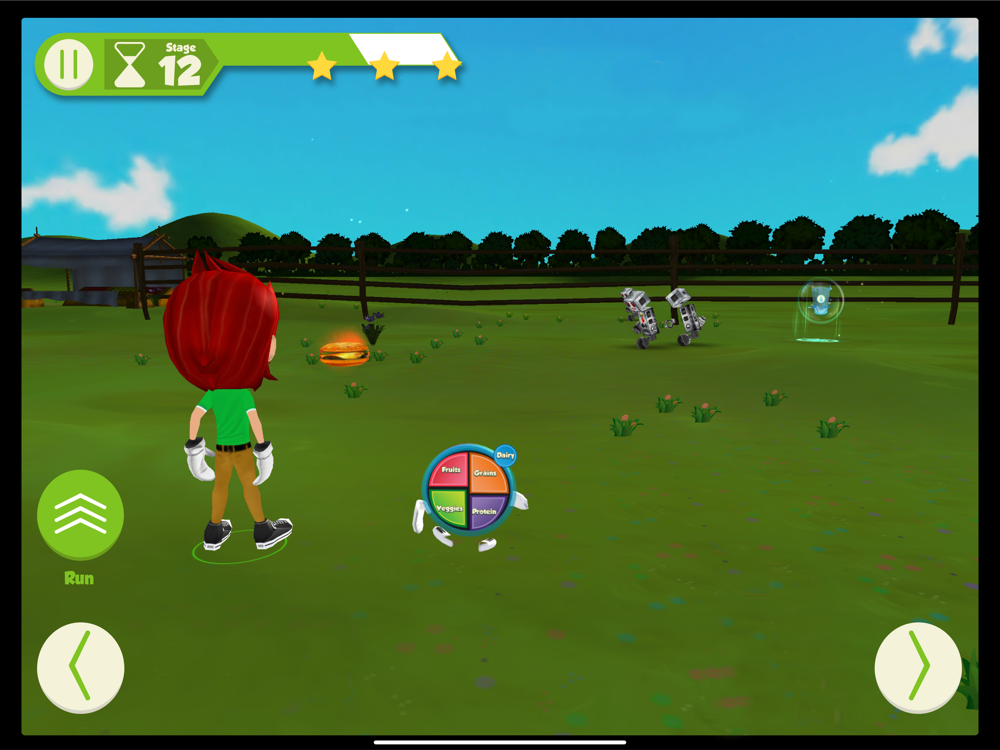- Progress bar clearly displays time left and pause button at all times.
- Player control function remains unchanged; buttons added to increase recognition.
Pause
Before
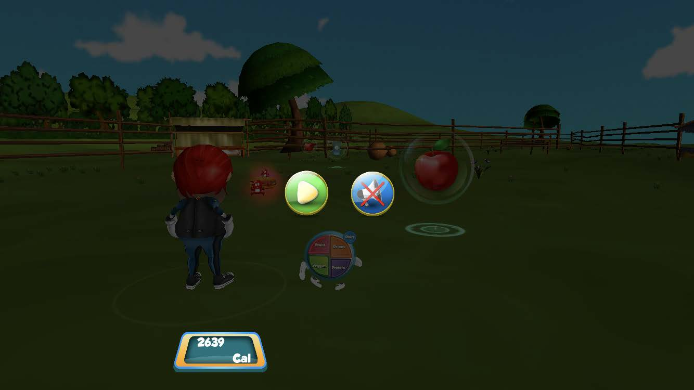After
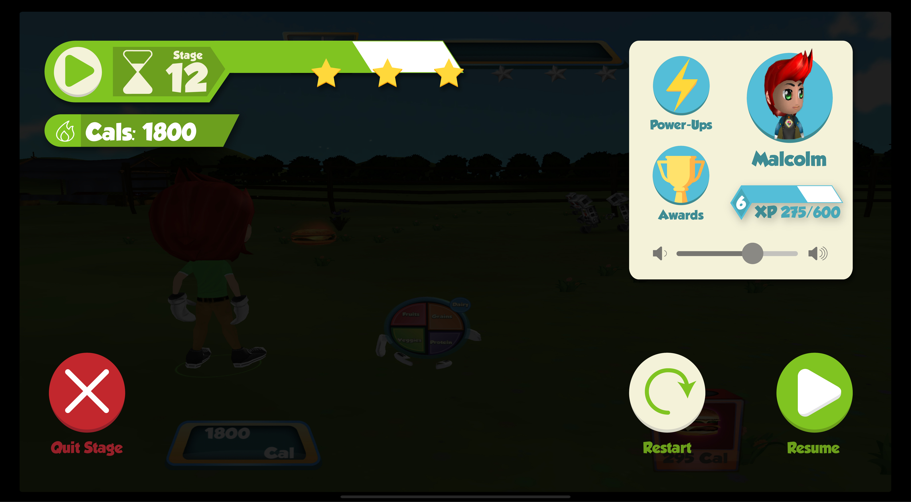- Character changes are ideally reflected live and don't reset progress.
- Player can quit to the map from pause screen.
Stage Complete
Before
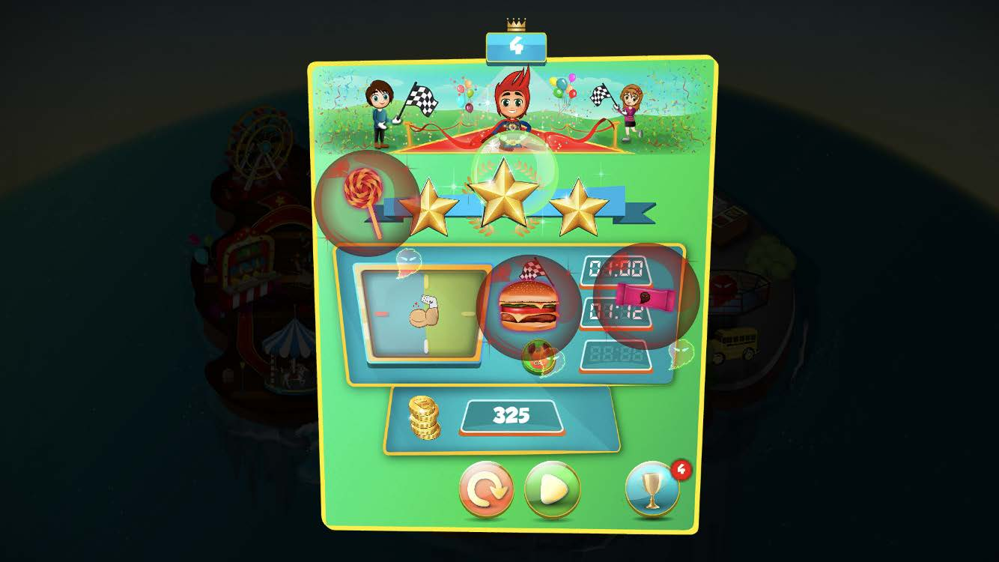After
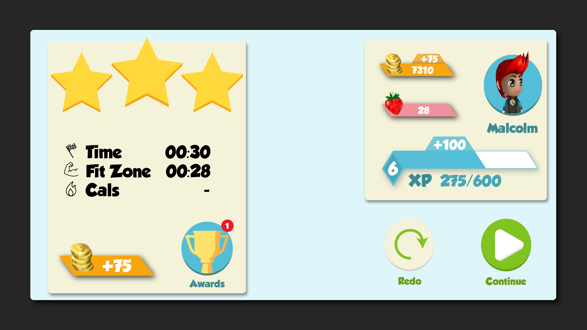- Level success clearly relates to long-term progress.
- Level stats are indicated with shart text labels.
Awards
Before
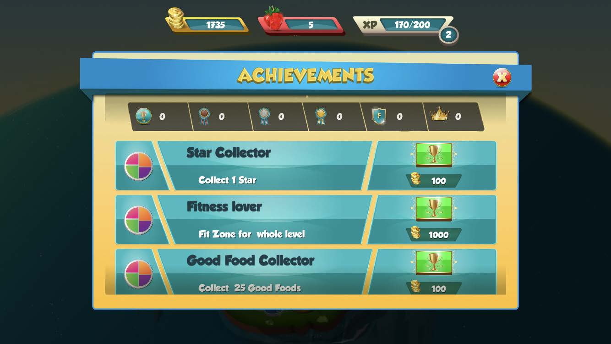After
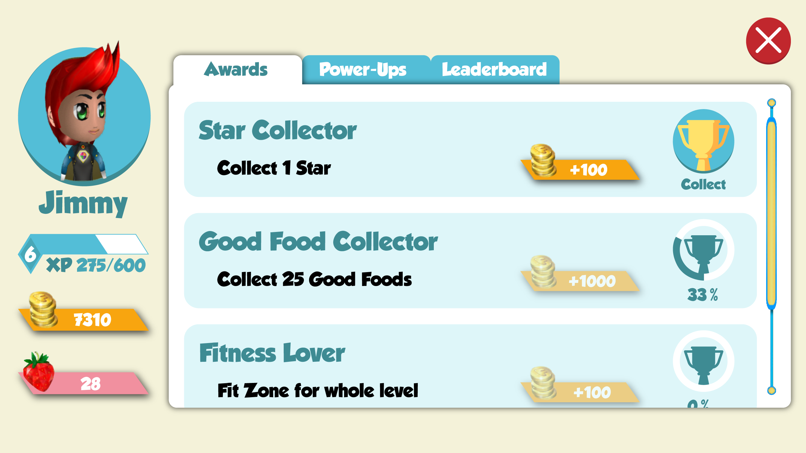- Available awards are fully opaque and displayed as buttons.
- Unavailable awards indicate progress towards completion.
Power-Ups
Before
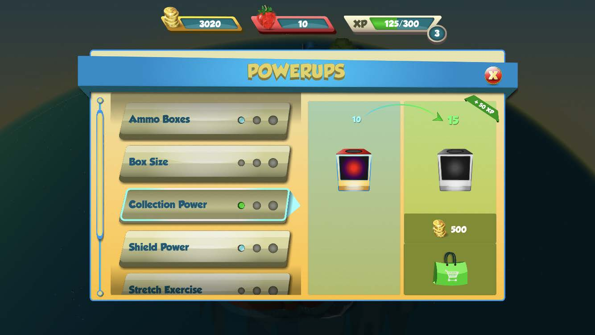After
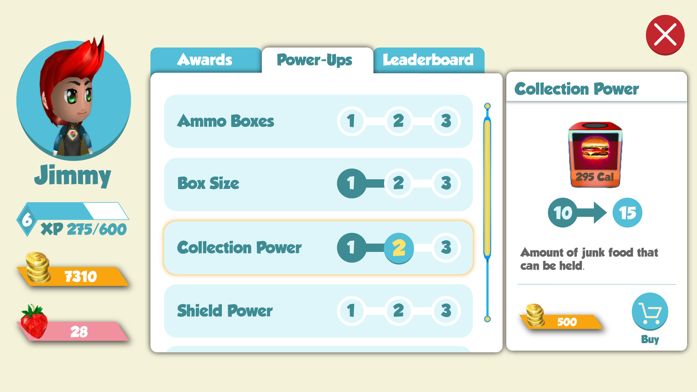- Completed power-ups are a flat, dark style.
- Available power-ups are denoted in button style.
- Very short text description indicates utility.
Leaderboard
Before
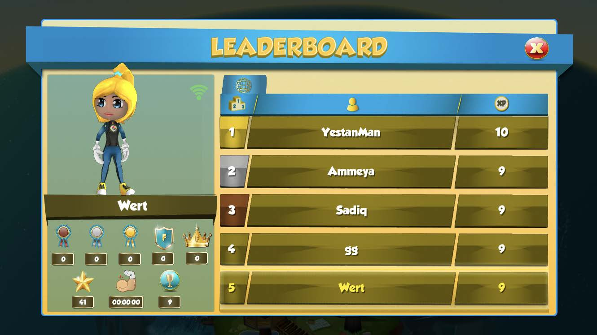After
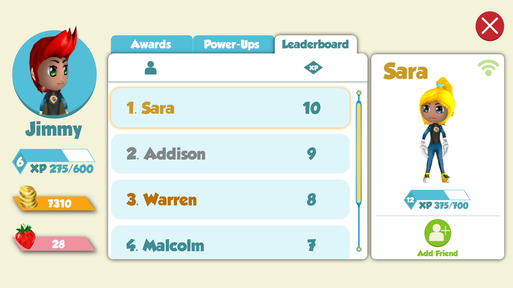- Top players have special metal coloring.
- Players can be added to friend network (with multiplayer implmentation).
Validation Overview
Methods
The team conducted between-subject A/B Test to validate designs. In test A, eight people were asked to complete tasks in the game using the currently existing screens. In test B, a different set of eight people were asked to complete the same tasks in the game using the redesigned version of game screens. These tasks were analyzed according to completion time, confidence level, and comprehension level.
Key Findings
- Across all 16 tests, it took users less time to complete tasks when shown the newly designed screens. Task completion time decreased by a median of 15%.
- Comprehension levels also increased across tasks. This shows that users are more likely to understand Fooya! as it is portrayed, and can focus more on gameplay.
- Comprehension levels measures correctness, while confidence level measures speed, enjoyment, and certainty. It is very important that confidence levels drastically increased, because this means many users doubts around this game have decreased, and they are more likely to explore.
Impact
It is the team's hope that this project work can help Fooya! grow increasingly effective as a mobile platform striving to eradicate the diabetes epidemic, one child at a time!
Interaction Design - Ember
Organization
University of Michigan School of Information
Project Team
Team of 6 UX BSI Students
Team Role
UI/UX Designer
Project Duration
September 2018 - December 2018
Problem Statement
Despite 24/7, wall-to-wall coverage of national politics, local and state political information is still difficult to find. When it comes to local elections, people tend to vote simply along party lines. Instead, our goal with this application was to have voters make more informed, confident choices.
By empowering users with information that is often overlooked and facilitating in-person discourse, my team and I believed we could create a platform that allows people to unite through their local government and ultimately be more effective citizens. Our solution was an iOS application called Ember that facilitates in-person events, helps users find local candidates, and stay updated on important topics.
Solution Overview
Users
An uninformed voter who feels uncertain about voting in local elections and wants to engage with their community through in-person discourse to gain knowledge about politics. They feel they are hindered by scarcity of events within the community and unreliable/unknown sources in trying to find events and facts about politicians.
An informed and passionate citizen that is looking to increase their impact and altruistic feelings, but feels they lack the resources to do so. They need a platform to reach an audience and help get people fired up.
User Personas
Application Functionality
- Find candidates that align with their views
- Stay updated with canidates over time
- Save articles on relevant topics or political action
- Create events for discourse or political action
- View and RSVP to events in the community
Final Solution
Adobe XD Prototype
Stand-Out Factors
- The premise of our application itself; there are no mobile applications as accessible as ours that address the same problem in a political context.
- Library collections are easy to create & update, and allow for powerful management of news articles.
- Follow message appears only the first time a candidate is followed. This informs the user, but doesn’t berate them.
- Explore filtering tab allows for direct access with a single tap.
Scrapped ideas
X/Save Buttons
Each card originally had the buttons to the left associated with them. These designs did not help create an appropriate mental model for the users, and were confusing interactions. Usability tests revealed it was not clear what would happen by clicking either one. To be frank, we didn’t know what effect the “X” would have.
Saved Section
We originally had one saved section for events, candidates, and articles. We soon realized, however, that there was different utility in looking at each later on, and interactions needed to be more specialized.
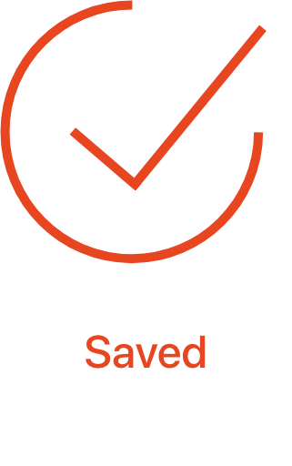Chat
While this idea barely even carried into our paper prototype, we decided we explicitly did not want to include a chat or commenting feature in our application. We do not believe this supports our mission of increasing positive discourse, due to the different dynamics associated with online discussion. We think Ember should be a tool to unite people, and enabling keyboard warriors does not create unity. This is especially the case when it comes to politics. We instead chose to turn focus to in-person events.
Not Implemented in Prototype
Swiping Navigation
We view swiping as the primary navigation method in the explore tab. For our prototype, we had to implement navigation arrows with large amounts of padding. This was simply because dragging triggers and animations are difficult to do with existing prototyping tools. In a full-featured application, we would increase the prominence of swiping, and believe that navigation would be more natural.
Tools & Methods
Paper Prototype
The paper prototype was an invaluable starting tool. It allowed us to unify our team ideas into something more concrete. The prototype was far from finished at this point, but gave us something to come together on and begin creating our own mental model for the application. This was also where we began our design process, in which two members would design the same screen independently, and together the team could pull ideas from both versions.
Adobe XD
Creating a digital prototype in Adobe XD allowed us to have a medium through which we could refine many of the minutiae that would make our application usable or not. Through this, we were able to more clearly define navigation, choose accurate semantics, and establish information hierarchy. XD provided us the ability to work at a low cost, on multiple operating systems, and with controls that fit conventions that many of us were familiar with. We also appreciated the ability to design basic elements and prototype within the same application.
Impact
Ember has the potential to mobilize citizens and empower them to take initiative in regards to their local politics. We also believe there is a large possibility of this spilling over to a general increase in political activism.
Focus on local events and news can help instill a greater sense of community and responsibility in individuals. Equal ability amongst all users to create events distributes power more equally.
Finally, we believe the affordances of ember indicate to users that it is simply a tool. We want to turn focus away from digital “activism,” and shift the focus back to real events, people, and impact.
GoaldenRoad LLC - Mvents

Organization
GoaldenRoad LLC
Project Team
Team of 4 Innovate Blue Students
Team Role
User Interface Designer
Project Duration
January 2017 - April 2018
Problem Statement
At the University of Michigan, there is a significant disconnect between students and available resources. The University provides students with incredible resources and opportunities, but students often fail to take advantage of them because they do not find out about them in time. The University website for events, events.umich.edu, is difficult to use because they present a lot of information, but is unintuitive for the users to navigate.
To better connect University of Michigan students with university resources, my team and I designed an application that will keep students up to date on Michigan events that they may be interesting in attending. The application was designed to suggest University of Michigan events by accessing the current Umich Events API and cross-referencing their searchable tags and times with one’s interests and time commitments. This application is designed to provide students with quick and accessible information on the events that they are likely to be interested in and are available to attend.
Design Process
Interaction Mapping
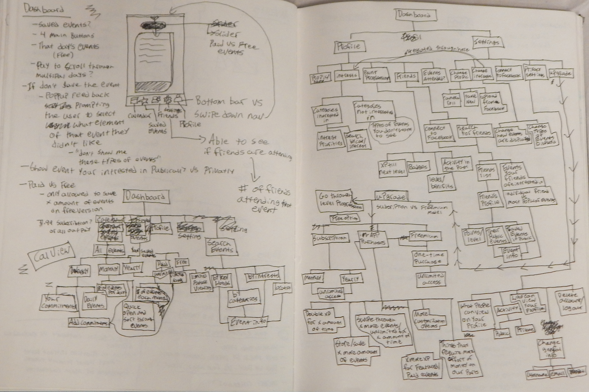Paper Prototypes

Digital Wireframess & Mockups
 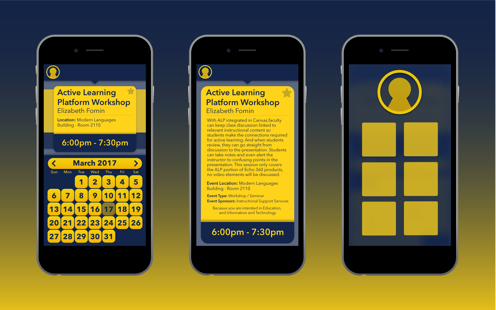
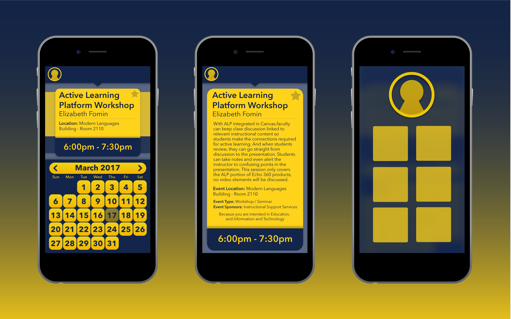